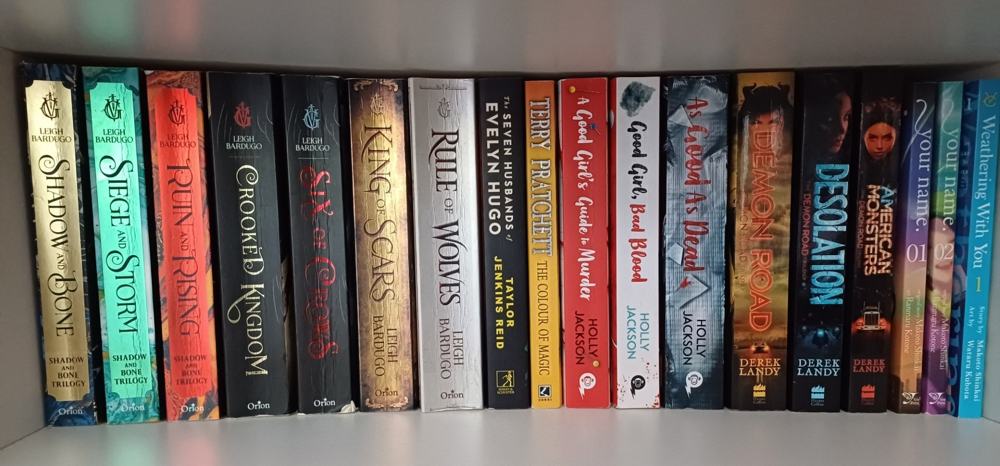

Interests
Reading
I really enjoy reading, my favourite authors are Derek Landy and Leigh Bardugo and my favourite book series is Six of Crows.
Music
Listening to music is another of my hobbies, my favourite bands right now are Linkin Park, Foo Fighters, Citizen Soldier and I Prevail I really like the grunge rock genre as well as metal too.